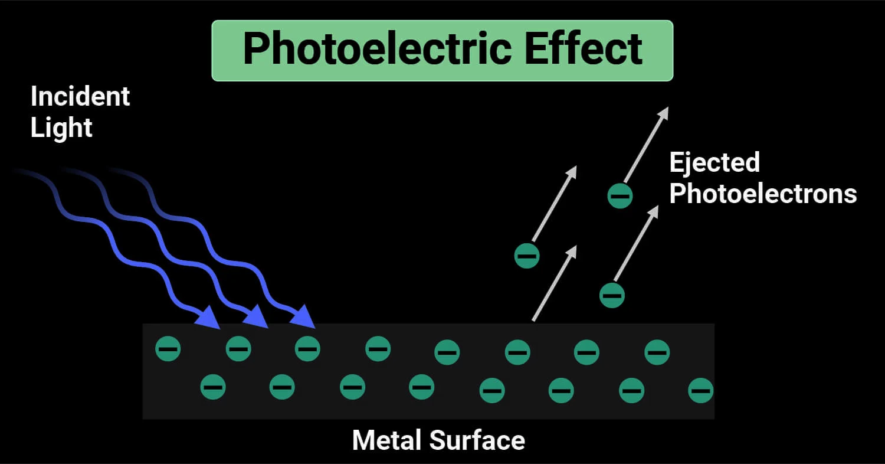

The photoelectric effect is a phenomenon where electrons are emitted from a metal surface when it is exposed to electromagnetic radiation (typically UV light). It provided crucial evidence for the particle nature of light.
Key Observations
- Electron emission occurs only if the incident light has a frequency above a certain threshold, regardless of its intensity.
- Below the threshold frequency, no electrons are emitted — even if the light is very intense.
- Increasing the light intensity increases the number of electrons ejected, but not their energy.
- The energy of the emitted electrons depends on the frequency, not the intensity, of the light.
- Emission is instantaneous, without delay.
Einstein’s Photoelectric Equation
Einstein proposed that light consists of discrete packets of energy called photons. The energy of a photon is:
\[ E = hf \]
- \( h \): Planck's constant \( (6.626 \times 10^{-34}\, \text{Js}) \)
- \( f \): frequency of the incident light
The energy of the photon is used to overcome the work function \( \phi \) (the minimum energy needed to remove an electron from the metal), and any remaining energy becomes the kinetic energy \( K.E \) of the electron:
\[ hf = \phi + \frac{1}{2}mv^2 \]

Significance
- This effect could not be explained by classical wave theory.
- It confirmed that light behaves as both a wave and a particle.
- Won Einstein the Nobel Prize in Physics in 1921.
Written by Thenura Dilruk